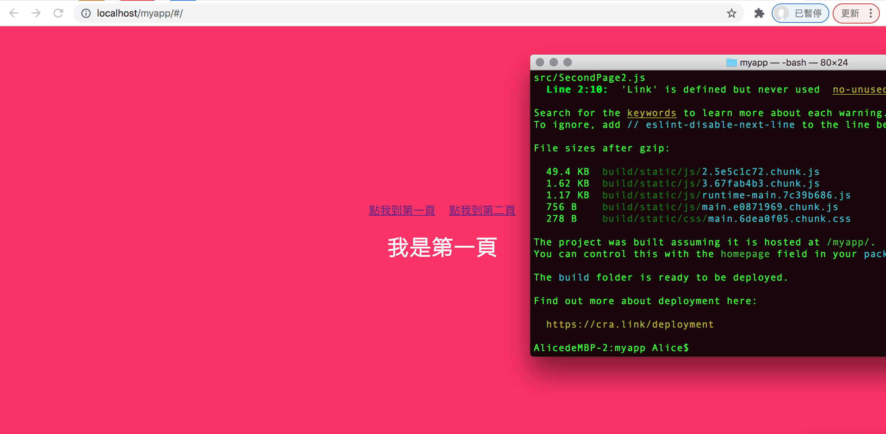
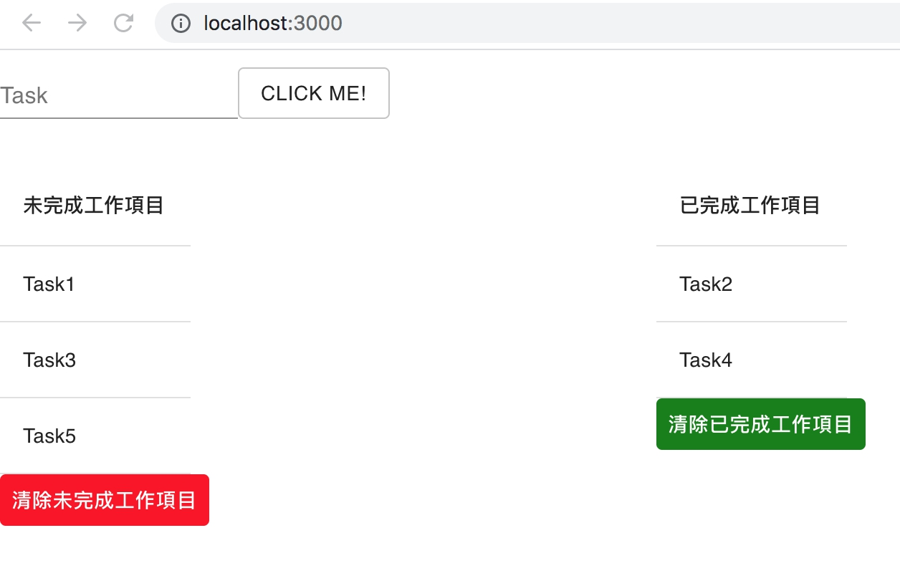

React
React 打包？
- 打開 xampp -> 在 htdocs 開新資料夾
- 在 package.json 檔案新增 homepage 欄位（ex: "homepage": "/myapp”,）意思為把程式打包到哪個目錄
- 至要打包之檔案 $npm run build
- 此時已有新的資料夾名為 build，把 build 底下的資料全部複製到 htdocs myapp 的資料夾內
成功打包！localhost 打開成功～（舊檔案有更改要覆蓋在 htdocs 的檔案，就要重新打包再複製貼上一次）
Material-ui 是 React component 的套件。
material-ui 步驟：
- 至 week4 資料夾內（與 myapp 同層）create-react-app maui
- cd myui
- npm install @material-ui/core
- npm install @material-ui/icons
- 編輯 app.js
- npm start
用 function 與 material-ui 做出來的簡單 todolist。
